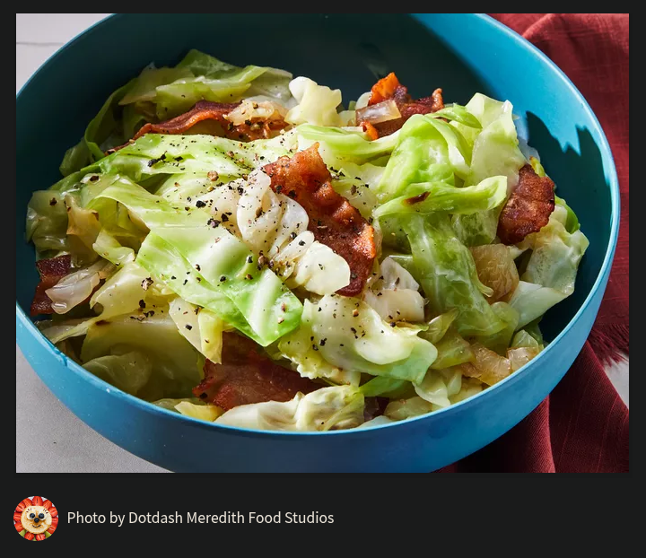

Fried Cabbage and Cornbread

Description
This incredibly easy and quick fried cabbage makes a great side dish or even a complete meal alongside some cornbread.
Ingredients
For Fried Cabbage:
- 1 package of bacon
- bacon grease from cooked bacon
- 1 large head of cabbage
- 1 tsp of ground black pepper, or to taste
- 1 tsp of onion powder
- 1 tsp of garlic powder
- 1 tsp of paprika
- 1 tsp of fennel seeds, to taste
- 1/2 tsp of liquid smoke
- 1/2 tsp of sugar, to taste
- 1/4 cup of water
For Cornbread:
- 1 box of Jiffy cornbread mix
- 1 large egg
- 1/3 cup of milk
Steps
- Preheat oven.
- Make Jiffy cornbread according to the box instructions. Set aside.
- Gather all ingredients. Slice cabbage into strips
- Add sliced bacon in batches to a cold pan and cook until bacon is crisp, about 8 - 10 minutes. Remove and drain on a paper towel
- Add sliced cabbage to pan with remaining bacon grease. Add seasonings and mix well. Add water and cook until cabbage is tender, about 10 - 15 minutes.
- Serve fried cabbage with a side of cornbread. For added richness serve cornbread with softened butter and a drizzle of honey.
Check out more yummy recipes at Home.
Original recipe credit (Fried Cabbage)